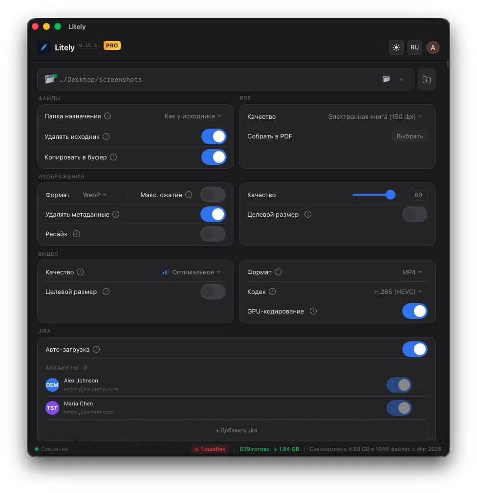
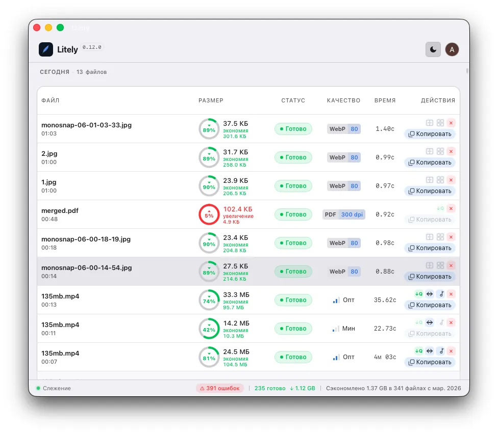
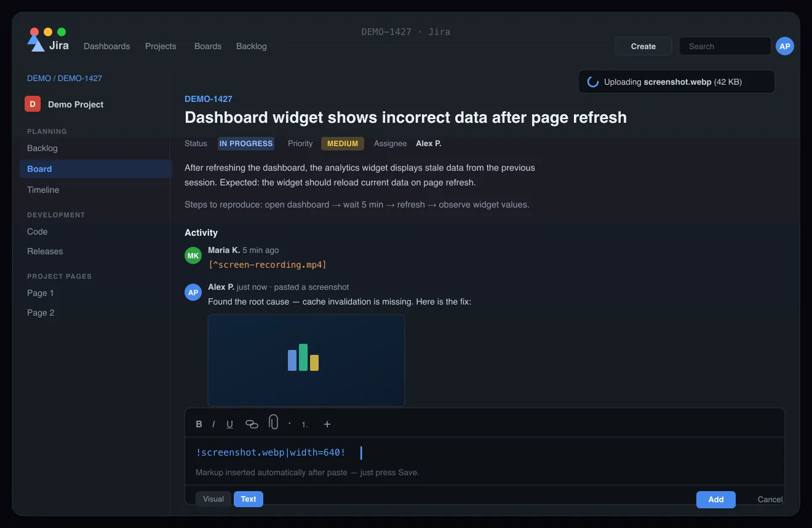

Compress Everything.
Automatically.
Add a folder — Litely watches for new files and compresses them in the background. Videos, images, zero effort.
macOS 11+ · Native app


Jira Screenshot Compression — Paste & Go
No other tool does this. Take a screenshot or record a video — Litely compresses it by up to 90%, converts the format, and puts the result in your clipboard. Switch to Jira, paste into a comment — the file uploads right into the issue. Markup is inserted automatically. Save the comment — done.
Capture
Take a screenshot or record a video. Save it to Litely's watch folder — compression starts instantly.
Auto-compress & convert
Up to 90% smaller. Format conversion on the fly — JPG → WebP, MOV → MP4. The optimized file goes straight to your clipboard.
Paste into Jira
Open a Jira comment and press Cmd+V on Mac or Ctrl+V on Windows/Linux. The file uploads directly into the issue with a progress indicator.
Markup is ready
Jira markup is inserted automatically — !image.webp! for images, [^video.mp4] for videos. Save the comment — the attachment is linked to the issue.

Watch Folder Compression — Set It and Forget It
Add up to 3 folders — Litely watches them around the clock and compresses every new file automatically.
- Watch up to 3 folders simultaneously
- Real-time detection of new files
- Settings persist between restarts
- Smart filtering — skips hidden, compressed, and output files
Video Compression — H.264, H.265, AV1 Codecs
From H.264 to AV1 — pick the perfect balance between compatibility and compression ratio.
- GPU acceleration via VideoToolbox (macOS)
- 3 quality presets: Compact, Optimal, Maximum
- Two-pass encoding for optimal quality/size
- Convert: MP4, MOV, AVI, MKV, WebM, FLV, GIF
- Extract audio track from video
- Resize video (fit / width / height)
- Target file size — auto quality adjustment
Compression ratio →
Image Compression — WebP, AVIF, PNG, SVG
From WebP to AVIF to SVG — choose the right format and quality for every use case.
- Quality slider 1–100
- Strip EXIF & ICC metadata
- Max Effort mode — slower, better compression
- Target size in KB — auto quality adjustment
- Batch resize — multiple sizes from one image
- Visual before/after comparison
- SVG optimization & raster-to-vector conversion
Input: WebP, AVIF, JPEG, PNG, SVG, HEIC/HEIF, BMP, TIFF
Batch Compression Management
Pause, resume, cancel — manage every compression task with precision.
Pause & Resume
Pause, resume, or cancel individual tasks at any time.
Real-Time Progress
Live progress with estimated time remaining for each task.
Smart History
Task history grouped by date with 7-day auto-cleanup.
Size Tracking
See input size, output size, and percentage reduction for every file.
Tray Progress
Batch processing progress visible right from the system tray.
Date Grouping
Tasks grouped by date — today, yesterday, and older.
System Integration — Runs in Background
Designed to work quietly in the background and stay out of your way.
Drag & Drop
Drop files directly into the app window to start compression.
System Tray
Runs quietly in the system tray — always ready, never in the way.
Floating Progress
Always-on-top progress panel — see status at a glance.
Auto-Copy
Compressed file is automatically copied to your clipboard.
Auto-Delete
Optionally remove originals after successful compression.
Dark & Light
Both themes supported — switch to match your preference.
Native Performance — 7 MB, Instant Launch
Just 7 MB. Launches instantly, works fast, takes up almost nothing.
- Native binary — instant startup
- Hardware-accelerated GPU encoding
- Smooth UI even with thousands of files
- Instant interface response, zero lag
Who Needs a Video & Image Compressor?
Content Creators
Compress videos before uploading to YouTube, TikTok, or Instagram.
Photographers
Batch optimize images for web galleries and client deliverables.
Video Editors
Quick compression for review copies and sharing with clients.
SMM Managers
Optimize media before publishing to social platforms.
Developers
Compress image and video assets for web projects and apps.
Everyone Else
Free up gigabytes of disk space without losing quality.
Frequently Asked Questions About Video & Image Compression
How does Litely compress video?
Litely uses modern codecs — H.264, H.265/HEVC, and AV1 — with GPU acceleration on macOS. Choose a quality preset or set a target file size, and Litely adjusts quality automatically. Two-pass encoding ensures optimal quality-to-size ratio.
What video and image formats does Litely support?
Video input: MP4, MOV, AVI, MKV, WebM, FLV, GIF. Video output: MP4, MKV, WebM. Image input: JPEG, PNG, WebP, AVIF, HEIC/HEIF, BMP, TIFF, SVG. Image output: WebP, AVIF, JPEG, PNG, SVG.
Is Litely free?
Litely is free during Early Access with full functionality. After Early Access, a free tier with basic features (H.264, 3 files/day) will remain. Pro includes all codecs, unlimited files, GPU acceleration, and more.
How is Litely different from HandBrake?
Litely is designed for automation — add a watch folder and every new file gets compressed automatically. No manual setup per file. It also includes image compression, Jira integration, batch resize, and a native lightweight UI using under 40 MB of memory.
Does Litely work in the background?
Yes. Litely runs in the system tray and monitors watch folders 24/7. New files are detected and compressed automatically. You can see progress from the floating panel or tray icon without opening the main window.
Can Litely compress images without losing quality?
Yes. Litely supports lossless PNG and near-lossless WebP/AVIF with a quality slider (1-100). Visual before/after comparison lets you verify quality. Typical savings: 80-90% at quality 85+ with no visible difference.
What operating systems does Litely support?
Available for macOS 11+ (Apple Silicon and Intel), Windows 10+, and Linux (Ubuntu 22+, Fedora 38+).
Download Litely — Free Video & Image Compressor
Free during Early Access. Choose your platform.